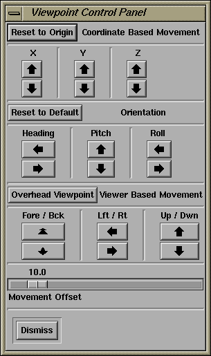
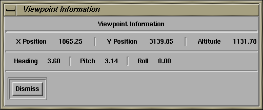
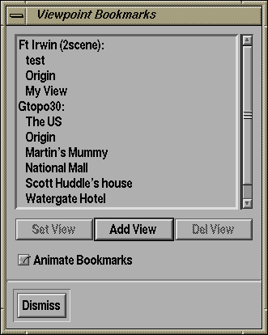

Viewpoint Controls The Viewpoint Controls window lets you move yourself through the terrain in a number of different manners.N.B. whilst navigating around the 3-D viewer, you can press the SHIFT button along with any of the mouse buttons in order to access Viewer Based navigation, e.g. SHIFT + Right Mouse Button lets you do the same as the "Lft/Rt" and "Up/Dwn" buttons by simply moving your mouse in the appropriate direction. |
Viewpoint Information The Viewpoint Information window simply tells you your current position and orientation in the world. |
Viewpoint Bookmarks The Viewpoint Bookmarks facility lets you save viewpoints that you like and then return to them easily at a later juncture. In order to create a bookmark, you simply click over the "Add View" button and enter a name for that viewpoint. To remove a viewpoint, you click over it in the list of viewpoints and then select the "Del View" button.In order to go to a viewpoint that you previously bookmarked, simply double-click over its name in the Viewpoints list, or single-click and then select the "Set View" button. Note that TerraVision displays all of the bookmarks for all of the datasets that you have loaded for a particular viewer. Currently, in order to rename a viewpoint, you must go to that viewpoint ("Set View"), delete it ("Del View"), and then add a new viewpoint with the new name ("Add View"). The "Animate Bookmarks" option controls whether TerraVision will create an animation to the selected viewpoint bookmark when you select Set View, or if it should simply jump there immediately. N.B. if you create a bookmark called "Origin" (case insensitive), then TerraVision will use this bookmark to set the initial view when you first open the 3-D viewer. Your bookmarks are stored in the file .TerraVisionViewpoints in your home directory. This file is updated every time you add or remove a viewpoint - you do not need to explicity save the bookmarks. |